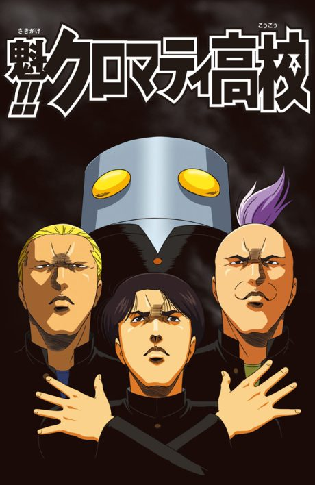

NANBAKA
ナンバカ
Four inmates in an unbreakable prison keep finding ways to escape.
After the anime, read the manga from Chapter 95.
7.1AniList score
—Animeter, no votes yet
25episodes, 2 seasons
Rate it or report where you stopped
Anime finished. Where does the manga pick up?
Start at Chapter95
After both anime parts, pick up the manga at Chapter 95.
More like NANBAKA
 Manga Ch. 927.7
Manga Ch. 927.7
 Original8.6
Original8.6
 Manga Ch. 1048.2
Manga Ch. 1048.2
 Manga Ch. 3268.3
Manga Ch. 3268.3
 Done8.5
Done8.5
 Original7.9
Original7.9
 Manga Ch. 1867.7
Manga Ch. 1867.7
 Manga Ch. 777.8
Manga Ch. 777.8
 Done8.8
Done8.8

Manga Ch. 17.5 Done7.9
Done7.9
 Original8.1
Original8.1